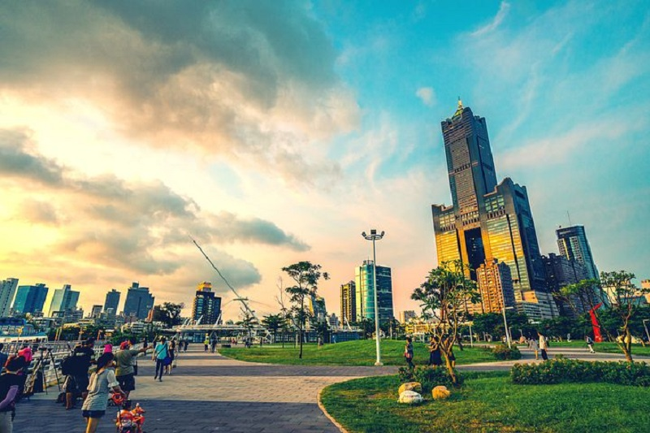
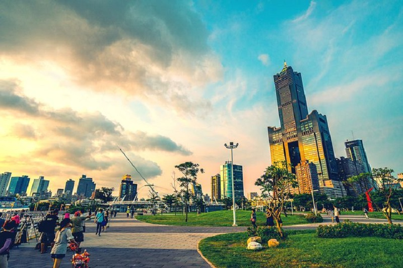
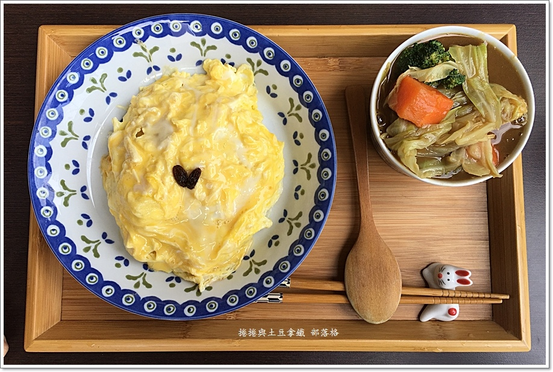
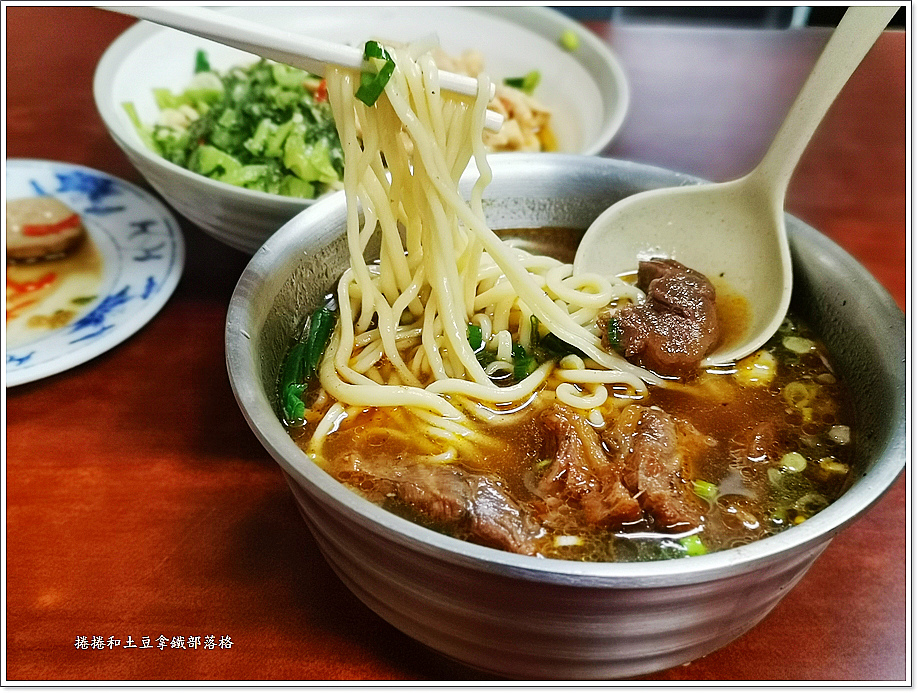
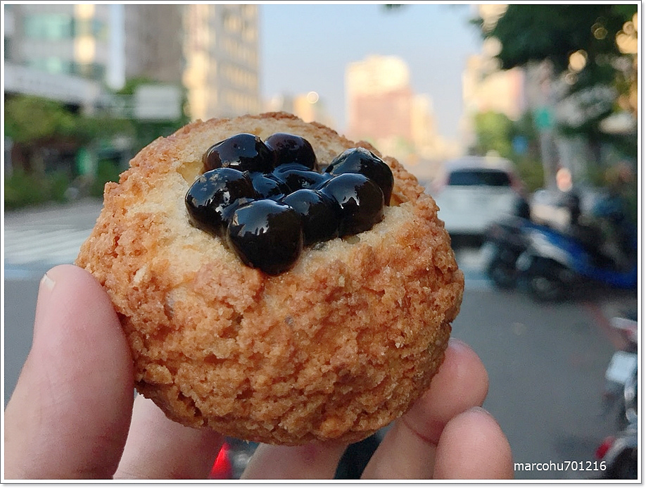
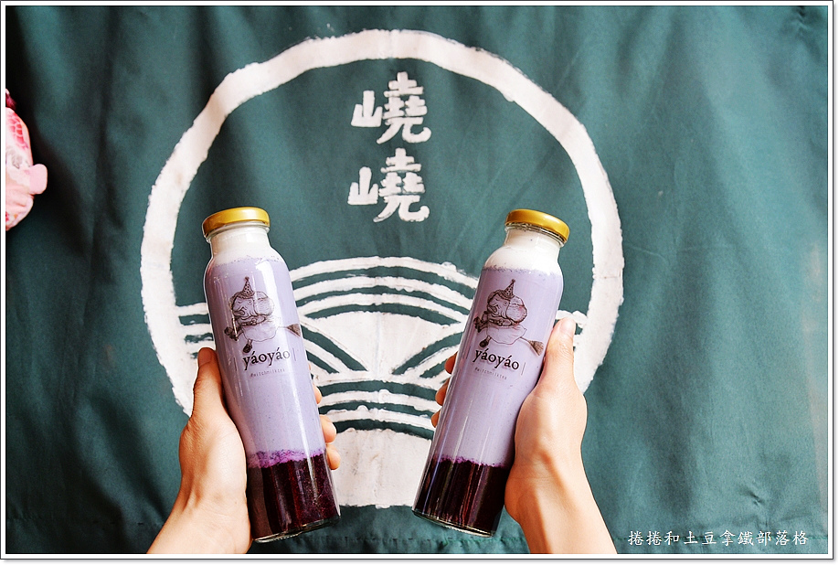
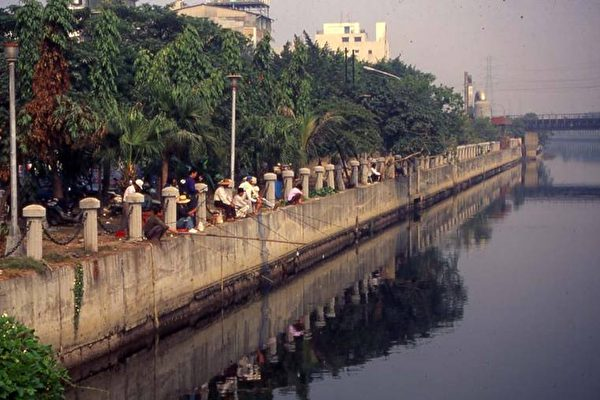
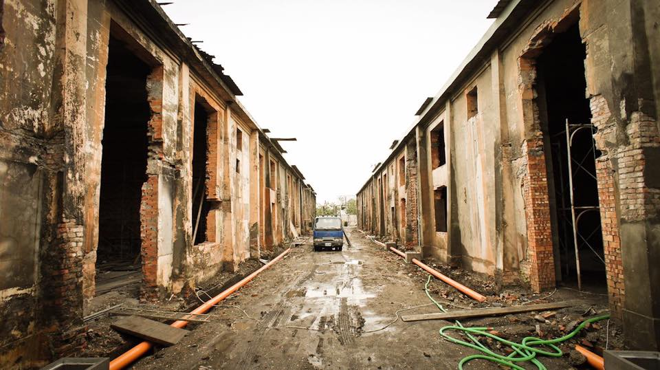

臺灣南方最繁華的國際城市─「高雄市」，為2009世界運動會主辦城市，因受海洋氣候調節，全年陽光普照、氣候宜人，有獨特的「海洋首都」特性。

前往page01 前往page02 前往page03 前往page04臺灣南方最繁華的國際城市─「高雄市」，為2009世界運動會主辦城市，因受海洋氣候調節，全年陽光普照、氣候宜人，有獨特的「海洋首都」特性。

前往page01 前往page02 前往page03 前往page04高雄有許多美食，來高雄一定要嘗試的！
1.新咖哩。駁二新創隱藏在騎樓下的咖哩小餐車

2.蘭州拉麵~手工拉麵真功夫

3.樹Go eat泡芙 散步甜食

4.嶢嶢茶居

前往page02 前往page03 前往page04 回到page00高雄有記載的歷史可遠溯至荷屬時期之前的明朝，而高雄原名有二：一曰打狗，一曰打鼓，在明代與清代兩朝文獻中，這二種用法都曾被採用，「高雄」一詞，則是到日治時期方被採用。 15世紀以前，打狗嶼本為平埔族西拉雅（Siraya）族的分支馬卡道（Makatau）族的居住地，荷蘭人稱此地為Tankoya，稱打狗港為Tancoia。
以下三張圖片為高雄以前不同地區的樣貌


前往page03 前往page04 回到page01 回到page00